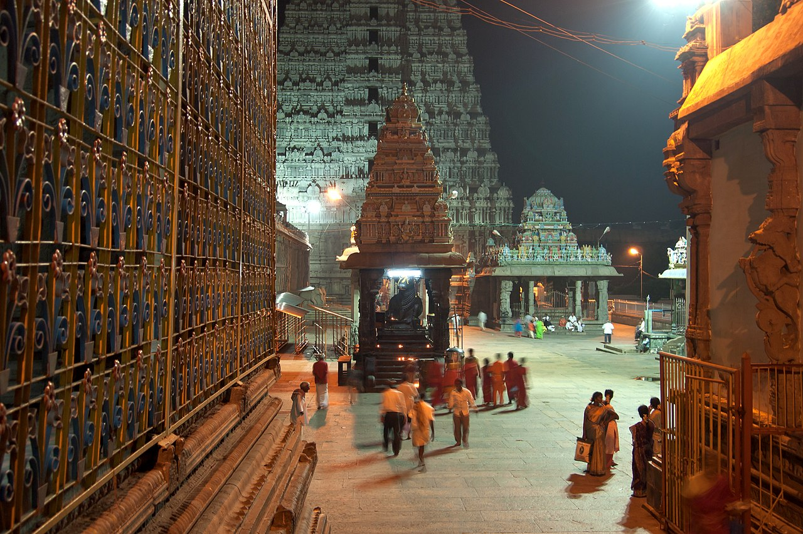

Sthala Puranam
Tiruvannamalai, at the foot of the great Arunachala hill, is the fire (Agni) element of the Pancha Bhoota shrines. The temple crowns the place where Shiva flashed as an infinite column of fire in the famous contest between Brahma and Vishnu.
Explanation
The classic Purana recounts that Brahma and Vishnu fought over which was the higher; Shiva appeared between them as a pillar of flame whose base and tip were sought, and neither could find them. Thus Shiva came to be worshipped at Arunachala, the southern fire of the world. The temple's sanctum bears the Agni linga; its huge gopurams and the annual Karthigai Deepam, when a vast lamp is lit atop the hill, proclaim that fire manifests in the greatest collective darshan of the South.
Why the temple is revered
Arunachala is both a hill and a Jyotirlinga-level seat of the fire element. Devotees of the Shaiva path — including the modern teachings around Ramana Maharshi at the ashram at its foot — call the hill 'the fire mountain'. The Diwali-like Karthigai Deepam, seen across the plains, is the year's culminating darshan of the element of light.
🕉 Story
Tiruvannamalai is the fire element (Agni) sthal. According to the tradition of the origin of the lingam, Shiva stood as a column of flame on the Arunachala hill, and the temple now crowns its foot.
✨ Significance
One of the five Pancha Bhoota temples, famous for the Karthigai Deepam festival.